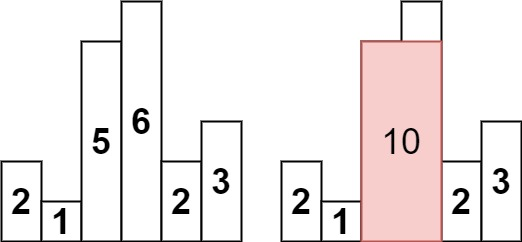
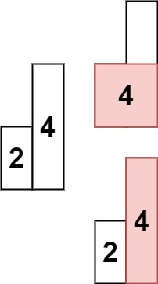

84. 柱状图中最大的矩形
题目与约束
给定 n 个非负整数，用来表示柱状图中各个柱子的高度。每个柱子彼此相邻，且宽度为 1 。
求在该柱状图中，能够勾勒出来的矩形的最大面积。
示例 1:

输入：heights = [2,1,5,6,2,3]
输出：10
解释：最大的矩形为图中红色区域，面积为 10
示例 2：

输入： heights = [2,4]
输出： 4
提示：
1 <= heights.length <=1050 <= heights[i] <= 104
核心不变量
出栈时当前柱子的左右第一个更矮边界已经确定。
完整推导
思路推导
-
直觉与痛点（木桶效应的死局）：
矩形的面积 = 宽 × 高。如果我们选定某一个柱子作为矩形的“高度”，那么这个矩形能向左右延伸多远？
答案是：直到遇到比它矮的柱子为止（木桶效应）。
暴力解法就是遍历每一个柱子，向左向右寻找第一个比它矮的柱子。但在最坏情况下（比如数组呈倒 V 型），每次都要扫描两边，时间复杂度会退化到 O(N2)，绝对超时。
-
破局思路（单调递增栈的优化思路）：
我们需要在 O(N) 的时间里，一次性把每个柱子的“左边界”和“右边界”都找出来。 我们维护一个从栈底到栈顶严格递增的栈（存索引）：
- 当新来的柱子比栈顶高时，直接入栈（因为栈顶的右边界还没找到，还能继续延伸）。
- 🌟 当新来的柱子比栈顶矮时，高能预警！这说明栈顶柱子的右边界找到了（就是当前这个矮柱子）！
- 此时，将栈顶柱子弹出。那么它的左边界是谁？就是它弹出后，此时露出来的新的栈顶！（因为栈是单调递增的，它下面压着的，必定是左边第一个比它矮的柱子）。
- 高度有了，左右边界有了，面积立刻结算！
-
核心微操（惊为天人的“双哨兵”技巧）：
如果原数组是
[2, 4, 6, 8]（完全递增），那么所有柱子都会压入栈，最后没有矮柱子来触发结算，导致最后还要写个while循环去清空栈。如果在开头遇到极小的柱子，弹出栈顶后，栈空了，左边界怎么算？又要写大量的
if-else。面试进阶技：首尾加哨兵（Sentinel）！
我们在原数组的最前面和最后面，各强行塞入一个高度为
0的柱子！- 开头的 0：保证栈永远不会空，省去了判断栈空的麻烦（它天然是所有元素的左边界）。
- 结尾的 0：保证遍历到最后时，所有的柱子都会因为比 0 高，被强制全部弹出并结算！
Java 实现（满分双哨兵单调栈版）
C++ 实现
实现来源：代码随想录（programmercarl.com）
class Solution { public: int largestRectangleArea(vector<int>& heights) { int sum = 0; for (int i = 0; i < heights.size(); i++) { int left = i; int right = i; for (; left >= 0; left--) { if (heights[left] < heights[i]) break; } for (; right < heights.size(); right++) { if (heights[right] < heights[i]) break; } int w = right - left - 1; int h = heights[i]; sum = max(sum, w * h); } return sum; } };Python 实现
实现来源：代码随想录（programmercarl.com）
# 暴力解法（leetcode超时） class Solution: def largestRectangleArea(self, heights: List[int]) -> int: # 从左向右遍历：以每一根柱子为主心骨（当前轮最高的参照物），迭代直到找到左侧和右侧各第一个矮一级的柱子 res = 0Go 实现
实现来源：代码随想录（programmercarl.com）
func largestRectangleArea(heights []int) int { sum := 0 for i := 0; i < len(heights); i++ { left, right := i, i for left >= 0 { if heights[left] < heights[i] { break } left-- } for right < len(heights) { if heights[right] < heights[i] { break } right++ } w := right - left - 1 h := heights[i] sum = max(sum, w * h) } return sum }
import java.util.ArrayDeque;
import java.util.Deque;
class Solution {
public int largestRectangleArea(int[] heights) {
// 1. 数组扩容，首尾各加一个“0”作为哨兵
int[] newHeights = new int[heights.length + 2];
// 默认第一位和最后一位都是 0，把原数组的数据拷贝到中间
System.arraycopy(heights, 0, newHeights, 1, heights.length);
int maxArea = 0;
// 单调栈，专门存放索引，且对应的高度从栈底到栈顶单调递增
Deque<Integer> stack = new ArrayDeque<>();
// 2. 开始遍历加了哨兵的新数组
for (int i = 0; i < newHeights.length; i++) {
// 🌟 核心逻辑：当前柱子比栈顶柱子矮，说明栈顶柱子的“右边界”找到了！
// 开始“大清算”，把比当前柱子高的栈顶全弹出来结算面积
while (!stack.isEmpty() && newHeights[i] < newHeights[stack.peek()]) {
// 弹出栈顶，它就是我们当前要计算的矩形的高度
int midIndex = stack.pop();
int h = newHeights[midIndex];
// 此时栈顶剩下的元素，就是弹出元素的“左边界”
int leftIndex = stack.peek();
// 当前柱子 i，就是弹出元素的“右边界”
int rightIndex = i;
// 计算宽度：右边界 - 左边界 - 1 （注意这里是开区间，不包含左右边界本身）
int w = rightIndex - leftIndex - 1;
// 挑战历史最大面积
maxArea = Math.max(maxArea, h * w);
}
// 当前柱子处理完毕，入栈等待自己的右边界到来
stack.push(i);
}
return maxArea;
}
}
复杂度
- 时间复杂度：O(N)。加上首尾哨兵后，数组共有 N+2 个元素。每个元素最多只会入栈一次、出栈一次。没有任何重复遍历，是极致的线性时间。
- 空间复杂度：O(N)。开辟了长度为 N+2 的新数组
newHeights，以及一个最坏情况下深度为 N+2 的单调栈。
- 极度高频坑点：宽度的计算公式到底为什么是
w = right - left - 1？
- 闭上眼睛想象：假设高度是
[1, 5, 6, 2]，栈里现在压着1, 5, 6。 - 遇到
2的时候，比6矮，弹出6计算面积。 - 此时
6的右边界是2（索引为 3），左边界是5（索引为 1）。 - 这说明包含
6的矩形，只能卡在索引 1 和索引 3 之间，真正属于它的只有索引 2 本身！ - 3 - 1 - 1 = 1，宽度为 1。公式完美闭环。
- 面试终极追踪：“如果我把这个一维的柱状图，变成一个由
0和1组成的【二维矩阵】，让你求里面最大的全为1的矩形面积，你该怎么做？”（对应力扣 85 题：最大矩形 - Hard 难度）
-
满分优化思路（矩阵压缩法）：这也是面试面试中最爱玩的套路——把新题降维成旧题。
-
遇到二维矩阵，我们只需要以每一行为地基，把上面的
1累加起来，当做柱子的高度。 -
比如矩阵：
1 0 1 0 0-> 这一层柱子是[1, 0, 1, 0, 0]1 0 1 1 1-> 这一层柱子是[2, 0, 2, 1, 1](遇到 0 直接归零，遇到 1 累加)1 1 1 1 1-> 这一层柱子是[3, 1, 3, 2, 2] -
我们只需要把每一层算出来的一维数组，当做 84 题里的
heights，调用 M 次（行数）上面写好的单调栈算法，取最大值即可。这绝对是展现你算法体系融会贯通的最佳时刻！